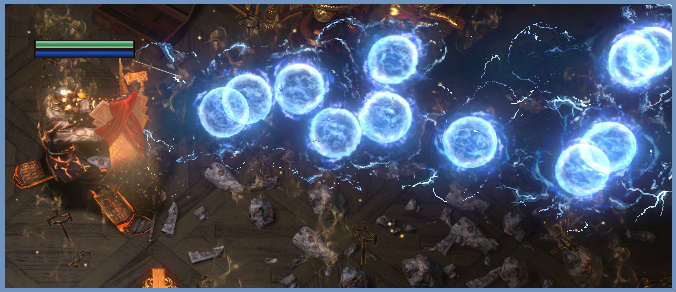
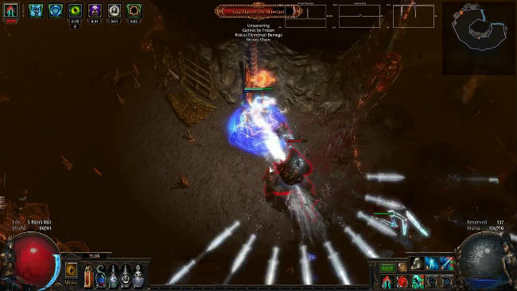
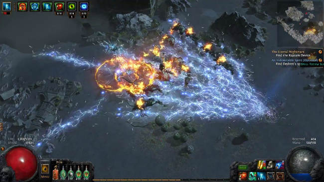

-
Inquisitor - Storm Burst 
Pros Cons - Great for clearing maps
- Penetrates enemies' resistances
- Unefficient for single target damage
-
Raider - Frost Blades 
Pros Cons - Also good clear speed
- High evasion
- Also bad single target damage
- Evasion might not be the most dependable defense
-
Raider - Lightning Strike 
Pros Cons - Once again, awesome clear speed
- Great boss-killer
- Oh-so satisfying kills
- Need to be wary of surroundings